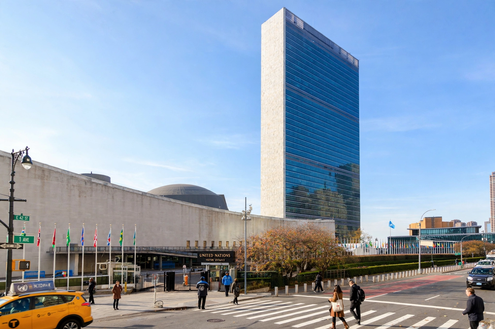

Secretary-General

Secretary-General (also Secretary General) is a title used for the chief administrative or executive officer of many organisations, including international bodies, political parties, trade unions, professional associations and non-governmental organisations. The precise powers attached to the office vary widely: in some organisations the Secretary-General is largely a chief administrator, while in others the office-holder is the organisation's principal leader and public representative.
United Nations
The most prominent use of the title is the Secretary-General of the United Nations, described in the UN Charter as the organisation's chief administrative officer. The Secretary-General is appointed by the General Assembly on the recommendation of the Security Council, conventionally for a renewable five-year term. Article 99 of the Charter empowers the Secretary-General to bring to the Security Council's attention any matter that may threaten international peace and security, a provision that has underpinned the office's diplomatic and "good offices" role.
Holders of the UN office have included Trygve Lie, Dag Hammarskjöld, U Thant, Kurt Waldheim, Javier Pérez de Cuéllar, Boutros Boutros-Ghali, Kofi Annan, and Ban Ki-moon. António Guterres, a former prime minister of Portugal, took office on 1 January 2017 and was appointed to a second term running to the end of 2026.
Other international organisations
Comparable offices exist across the international system. NATO is headed by a Secretary General who chairs the North Atlantic Council and serves as the alliance's chief spokesperson. The Commonwealth Secretariat, the Organisation of American States, the African Union Commission (whose head is styled Chairperson), the Arab League and many specialised agencies use the title or close equivalents for their chief executives. The role typically combines administration of a permanent secretariat with agenda-setting, mediation between member states, and representation of the organisation externally.
Political parties and other bodies
In many political parties — particularly communist and social democratic parties historically, and parties in parliamentary systems — the general secretary (often styled Secretary-General) runs the party's permanent organisation, machinery and finances, and may outrank or rival the party's public leader in internal influence. In the Soviet Union and other one-party states, the General Secretary of the Communist Party became the de facto national leader. Trade unions, churches, universities and charities also commonly employ secretaries-general as their senior permanent officials.
Selection and powers
Selection methods range from election by a congress or assembly to appointment by an executive board. Because Secretaries-General serve member states or members collectively, their authority is usually constrained: they implement decisions of governing bodies, though skilled office-holders have expanded the role through diplomacy, reporting, and public advocacy.